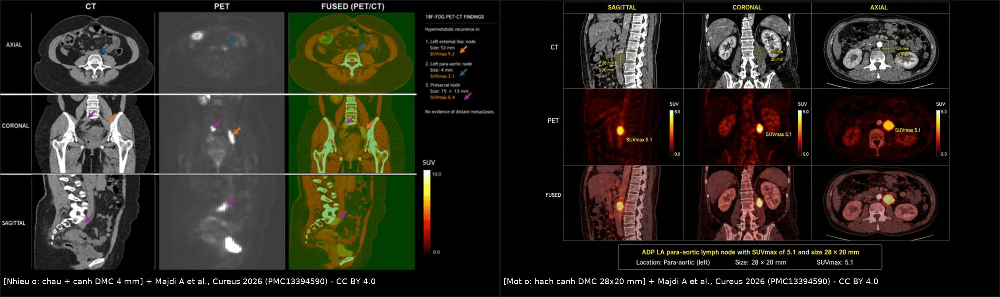
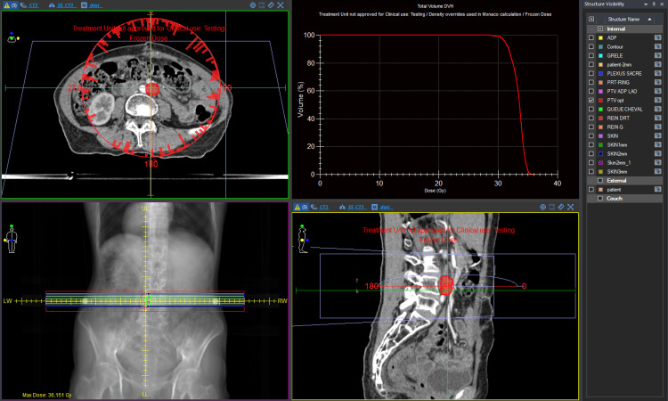
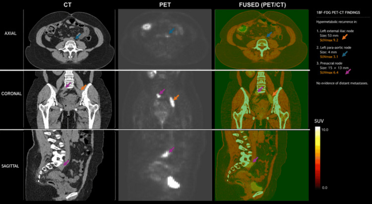
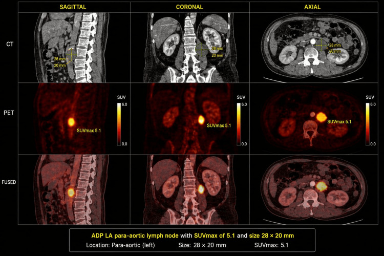

1664 — Hạch cạnh động mạch chủ tái phát sau xạ trị ung thư cổ tử cung / Para-aortic nodal recurrence after radiotherapy for cervical cancer
Tags: pattern:hach pattern:tai-phat vung:hau-phuc-mac vung:tieu-khung score:Node-RADS score:FIGO-2018 protocol:PET-CT protocol:MRI-DWI protocol:SBRT-xa-lai incidentaloma:hach-canh-dmc
Mức chắc chắn (certainty): tổng hợp y văn (literature synthesis) — 1 tổng quan về xạ lại SBRT (Thomas BJ et al., Clin Transl Radiat Oncol 2026, PMC12593702), 1 báo cáo 2 ca có ảnh PET/CT (Majdi A et al., Cureus 2026, PMC13394590), 1 nghiên cứu Node-RADS trên 439 ca ung thư cổ tử cung (Tan S et al., Cancer Imaging 2026, PMC13520168), 1 protocol thử nghiệm pha III nêu tiêu chuẩn chẩn đoán hạch cạnh động mạch chủ (Shinghal A et al., BMJ Open 2024, PMC11590838) và 1 tổng quan phân giai đoạn hạch cạnh động mạch chủ (Obando-Rodríguez JS et al., Cancers 2026, PMC13359896). Không có ca nguyên văn của nhóm; 2 ca trong mục (6) là ca của bài gốc, ghi rõ nguồn từng ca. Chỗ nguồn lệch nhau (ngưỡng kích thước hạch, giá trị SUVmax) được ghi là mâu thuẫn nguồn, không chọn bừa.
1. Tổng quan bệnh học – cơ chế hình ảnh
- Đường lan giải phẫu quyết định "vì sao cạnh động mạch chủ": ung thư cổ tử cung (cervical cancer — CC) lan bạch huyết theo bậc cạnh tử cung → hạch bịt trong/chậu trong → chậu ngoài → chậu chung → trước xương cùng → cạnh động mạch chủ (para-aortic, PALN). Vùng cạnh động mạch chủ thường nằm ngay trên bờ trên trường chiếu chậu — nơi liều giảm nhanh (vùng "bờ trường", field edge), và là nơi hạch vi di căn lúc chẩn đoán có thể "sống sót" rồi mọc lại sau xạ trị.
- Ba cơ chế của "tái phát cạnh động mạch chủ" — khác nhau về ý nghĩa:
- Di căn vi mô có sẵn từ đầu (occult): khi hình ảnh âm tính, mổ bóc hạch cạnh động mạch chủ vẫn tìm thấy di căn ở 8–12% bệnh nhân (Shinghal A et al. 2024). Đây là lý do PET/CT âm không loại trừ được di căn vi mô.
- Tái phát thật sau đáp ứng hoàn toàn ở vùng đã chiếu hoặc sát bờ trường.
- Hạch mới do thay đổi dẫn lưu bạch huyết sau xạ trị chậu (xơ hóa chặn đường dẫn lưu thông thường).
- Dịch tễ định lượng (các con số không đồng nhất — ghi nguyên vẹn):
- Hạch cạnh động mạch chủ có sẵn lúc chẩn đoán ở 17–24% ung thư cổ tử cung tiến xa tại chỗ (LACC) (Obando-Rodríguez JS et al. 2026); hạch chậu và/hoặc cạnh động mạch chủ chiếm 30–40% các ca, trong đó chỉ hạch chậu khoảng 30%; không có hạch chậu thì nguy cơ cạnh động mạch chủ < 5% (Shinghal A et al. 2024).
- Giai đoạn IIIC1 xạ trị chậu đơn thuần: hạch cạnh động mạch chủ chiếm tới 41% các thất bại hạch (nodal failure) (Shinghal A et al. 2024).
- EMBRACE (816 ca tiến cứu): thất bại hạch cạnh động mạch chủ chiếm 69% mọi thất bại hạch; trong 406 ca có hạch chậu dương lúc chẩn đoán, 47 ca (11,5%) thất bại cạnh động mạch chủ (dẫn trong Shinghal A et al. 2024).
- RetroEMBRACE (MRI-guided brachytherapy): thất bại cạnh động mạch chủ tới 24% (dẫn trong Shinghal A et al. 2024).
- Chiếu xạ cạnh động mạch chủ dự phòng (EFRT) hạ tỷ lệ tái phát PALN xuống 2,5% trong loạt 62 ca của Vargo et al. (dẫn trong Shinghal A et al. 2024) — đây là can thiệp dự phòng, không phải điều trị tái phát.
- TẠI SAO PET/CT và MRI-DWI bổ sung nhau (vật lý, không chỉ "tăng/giảm tín hiệu"):
- FDG-PET: tế bào u tăng đường phân (Warburg) → tăng bắt ¹⁸F-FDG. Nhưng độ phân giải không gian ~4–6 mm, nên hạch < 5 mm hoặc vi di căn có thể âm tính giả; ngược lại viêm, mô hạt sau xạ, đại thực bào cũng bắt FDG → dương tính giả. SUVmax phụ thuộc đường huyết, thời gian bắt thuốc, máy và nền gan/máu, nên không có ngưỡng SUVmax tuyệt đối để chẩn đoán.
- DWI/ADC: mật độ tế bào cao của hạch di căn làm nước ngoại bào giảm → DWI b cao sáng + ADC tối; mô xơ sau xạ giảm tế bào, tăng khoảng gian bào → ADC sáng. Vì vậy ADC là thứ tách hạch u với hạch xơ/viêm, T2W đơn thuần không đủ.
- Hệ quả thực hành: PET/CT dùng để phát hiện + phân giai đoạn toàn thân; MRI/CT đo trục ngắn + hình thái và xác nhận hạn chế khuếch tán thật. Không dùng một mình SUVmax hay một mình kích thước.
- Ngưỡng định lượng để gọi "hạch nghi di căn" (dùng trong thử nghiệm EPIC): hạch cạnh động mạch chủ trục ngắn > 8 mm, bờ thùy/không đều, và/hoặc hoại tử, kết đám (conglomeration), bọc mạch (vessel encasement), xâm lấn trên CT có cản quang, hoặc bắt FDG mạnh hơn nền (Shinghal A et al. 2024). Đây là tiêu chuẩn chọn bệnh nhân, không phải tiêu chuẩn chẩn đoán mô học.
- Node-RADS 1.0 (chuẩn hóa đọc hạch): chấm theo kích thước (trục ngắn ≥ 10 mm = "enlarged"; trục bất kỳ ≥ 30 mm = "bulky") và hình thái (kết cấu, bờ, hình dạng), rồi gộp thành điểm 1–5. Quy ước báo cáo: 1–2 = N(−), 4–5 = N(+), 3 = không xác định, tùy u nguyên phát (Tan S et al. 2026).
- Hiệu năng Node-RADS ở ung thư cổ tử cung (439 ca, MRI trước mổ, đối chiếu mô học): bác sĩ senior AUC 0,868, độ nhạy 76,4%, độ đặc hiệu 97,3%; junior AUC 0,758, nhạy 54,6%, đặc hiệu 97,0%; đồng thuận giữa 2 senior κ = 0,988, giữa 2 junior κ = 0,737 (Tan S et al. 2026). Nghĩa là hệ thống giúp đọc nhất quán, nhưng kinh nghiệm vẫn quyết định độ nhạy — và độ nhạy thấp là điểm yếu cố hữu của mọi tiêu chuẩn dựa trên kích thước.
- Cạm bẫy số liệu: gộp từ y văn (dẫn trong nghiên cứu Node-RADS đại tràng), tỷ lệ ác tính của Node-RADS 1 là 4% và Node-RADS 2 là 31% — nên "N(−) theo Node-RADS" không loại trừ được vi di căn.
2. Mẫu hình + chẩn đoán phân biệt theo vị trí (gamut)
Trục A — theo vị trí trong trục cạnh động mạch chủ (vị trí quyết định trường chiếu và biến chứng):
- Dưới tĩnh mạch thận trái (lower PALN, L2–L4): hay gặp nhất, giữa động mạch chủ và tĩnh mạch chủ dưới; là đích của chiếu xạ cạnh động mạch chủ dưới trong EMBRACE II (tới rốn thận). Đây là vị trí "chuẩn" của tái phát sau xạ chậu.
- Trên tĩnh mạch thận trái (upper PALN, ngang thân tạng/động mạch mạc treo tràng trên): ít hơn nhưng đổi giai đoạn nếu có; đi kèm hạch trung thất dưới qua lỗ cơ hoành.
- Khoang động mạch chủ – tĩnh mạch chủ (aortocaval/interaortocaval): hạch nằm giữa ĐMC và IVC, dễ nhầm với huyết khối IVC hoặc phình ĐMC có huyết khối.
- Cạnh động mạch chủ + hạch chậu/trước xương cùng: mẫu hình hay gặp ở ca 1 của bài (đa ổ vùng chậu + cạnh ĐMC).
- Cạnh động mạch chủ đơn độc (isolated): nhóm có khả năng cứu vãn tại chỗ cao nhất (SBRT hoặc mổ), nhưng phải loại di căn xa và ung thư nguyên phát thứ hai.
- Lan lên trung thất dưới (retrocrural): chụp PET/CT phải che tới nền cổ — bỏ sót tầng này là lỗi "satisfaction of search".
Trục B — gamut "hạch cạnh động mạch chủ to/tăng FDG" (theo bệnh bắt chước):
- Tái phát ung thư cổ tử cung (bối cảnh xạ trị chậu trước đó, hạch mới/to dần, ADC tối).
- Hạch viêm tăng sinh (reactive): bờ nhẵn, đối xứng, không hoại tử, có ổ viêm gần đó; thường giảm khi chụp lại.
- Lao hạch / sarcoidosis: hạch kết đám, hoại tử trung tâm (lao), có thể vôi hóa; bối cảnh dịch tễ, triệu chứng toàn thân.
- Lymphoma: hạch rất to, đồng nhất, nhiều tầng, thường không hoại tử; có thể là u thứ hai ở người sống sót sau ung thư.
- Di căn từ ung thư nguyên phát thứ hai (buồng trứng, niêm mạc tử cung, đại tràng, vú): hình ảnh giống hệt; mô học mới là chốt.
- Xơ hóa sau phúc mạc sau xạ (retroperitoneal fibrosis): mảng mô mềm bao quanh ĐMC/IVC, không có hạch rời, không hạn chế khuếch tán, FDG nhẹ; không phải tái phát nhưng cản trở mổ.
- Huyết khối/phình ĐMC có huyết khối: cấu trúc trong lòng mạch, không ngấm thuốc như mô hạch, có vôi hóa thành mạch.
Gợi nhớ NODES: Neoplasm tái phát (CC), Other primary/lymphoma, Disease lành tính (lao/sarcoid), Enlarged reactive, Scar (xơ hóa sau xạ).
3. Bảng so sánh phân biệt (ma trận đối chiếu)
| Thực thể (entity) | Hình ảnh điển hình (CT/MRI/PET) | Chốt vào (rule-in) | Chốt loại (rule-out) | Gợi ý xác nhận |
|---|---|---|---|---|
| Tái phát hạch cạnh ĐMC sau xạ trị CC | Hạch trục ngắn > 8 mm (hoặc mới xuất hiện), bờ thùy/không đều, hoại tử/kết đám, DWI sáng + ADC tối, FDG > nền gan, tăng dần qua các lần chụp | Hạch mới/to dần + ADC tối + FDG dương trong bối cảnh đã xạ chậu | Hạch ổn định ≥ 12 tháng, ADC sáng, FDG không tăng → không phải tái phát | PET/CT toàn thân + MRI DWI; sinh thiết qua EUS/CT khi do dự |
| Hạch viêm tăng sinh | Bờ nhẵn, đồng nhất, không hoại tử, đối xứng; FDG tăng nhẹ–vừa | Bờ nhẵn + không hoại tử + có ổ viêm lân cận + giảm khi chụp lại | To thêm, hoại tử, ADC tối khu trú → nghi u | Chụp lại 6–12 tuần; điều trị nguyên nhân viêm |
| Lao hạch / sarcoid | Hạch kết đám, hoại tử trung tâm, có thể vôi hóa; FDG mạnh | Hoại tử trung tâm + vôi hóa + bối cảnh dịch tễ/toàn thân | Không vôi hóa, không hoại tử, đơn độc → ít nghĩ lao | X-quang ngực, IGRA/PCR lao, sinh thiết |
| Lymphoma | Hạch rất to, nhiều tầng, đồng nhất, ít hoại tử; có hạch khác ngoài trục | Nhiều tầng + rất to + đồng nhất | Hạch đơn độc nhỏ, hoại tử → ít nghĩ lymphoma | Sinh thiết hạch (mô học + hóa mô miễn dịch) |
| Di căn từ ung thư nguyên phát thứ hai | Như tái phát; vị trí và hình thái không phân biệt được | Tiền sử/khám gợi ý u thứ hai + hạch ngoài vùng dẫn lưu CC | Chỉ có hạch trong vùng dẫn lưu CC và đúng thời điểm → vẫn phải loại bằng mô học | PET/CT toàn thân, CA-125/CEA, sinh thiết |
| Xơ hóa sau phúc mạc sau xạ | Mảng mô mềm bao quanh ĐMC/IVC, không hạch rời, ADC sáng, FDG nhẹ | Bao quanh mạch, không hạch rời, ổn định | Có hạch rời ADC tối → không phải xơ đơn thuần | So phim cũ; MRI DWI; tránh sinh thiết mù |
| Huyết khối/phình ĐMC | Cấu trúc trong lòng mạch, không ngấm thuốc, vôi hóa thành, ± túi phình | Trong lòng mạch + vôi hóa + không hạn chế khuếch tán | Mô mềm ngoài lòng mạch, ADC tối → hạch | CTA; so sánh thì động mạch/tĩnh mạch |

Trái: 32 tuổi, 12 tháng sau hóa–xạ, PET/CT có 3 ổ: hạch chậu ngoài trái 53 mm, SUVmax 9,2; hạch cạnh ĐMC trái 4 mm, SUVmax 3,1; hạch trước xương cùng 15 × 13 mm, SUVmax 6,4 — không di căn xa. Phải: 48 tuổi, 33 tháng sau hóa–xạ, một hạch cạnh ĐMC trái 28 × 20 mm, SUVmax 5,1. Nguồn: Majdi A et al., Cureus 2026 (PMC13394590), CC BY 4.0; ảnh ghép letterbox bằngtools/make_composite.py, không crop/kéo giãn.
Đọc đúng hạch "nhỏ mà thật" và hạch "to mà lành"
- Kích thước là tiêu chí yếu: hạch 4 mm trong ca 1 vẫn là di căn thật (SUVmax 3,1) — nếu chỉ dùng ngưỡng > 8–10 mm sẽ bỏ sót và không mở rộng trường chiếu. Ngược lại, hạch 15 mm viêm tăng sinh vẫn có thể lành tính.
- Ba trụ cột phải đọc cùng nhau: (1) kích thước + hình thái (Node-RADS), (2) hạn chế khuếch tán thật (DWI sáng và ADC tối), (3) chuyển hóa so với nền gan/máu và xu hướng qua thời gian. Thiếu một trụ cột thì không kết luận.
- Đo ADC đúng cách: ROI đặt trong phần đặc nhất, tránh trung tâm hoại tử; ghi kèm ADC cơ lưng/gan làm mẫu nội kiểm cùng máy — vì chưa có ngưỡng ADC tuyệt đối dùng chung cho hạch (bài 1626 ghi rõ điểm này cho vòm âm đạo).
- SUVmax không phải "điểm số ung thư": ca 1 có hạch 4 mm với SUVmax 3,1 và hạch 53 mm với SUVmax 9,2; nếu lấy SUVmax làm tiêu chí duy nhất sẽ bỏ sót ổ nhỏ nhất nhưng lại là ổ quyết định trường chiếu.
4. Protocol chụp + hệ phân độ/điểm chuẩn hóa
Chỉ định chụp (khi nào nghĩ tới tái phát cạnh động mạch chủ): đau lưng/đau chậu mới, phù chân, đau lan chân, SCC-Ag tăng, ho, ho ra máu; hoặc theo dõi định kỳ 3–6 tháng sau hóa–xạ (NCCN, dẫn trong bài 1626). Đừng chờ triệu chứng: hạch cạnh động mạch chủ thường im lặng.
PET/CT toàn thân (ưu tiên số một để phân giai đoạn):
- Nhịn ăn ≥ 6 giờ, đường huyết < 11,1 mmol/L (200 mg/dL) trước tiêm; ¹⁸F-FDG 3–5 MBq/kg; chụp 60 phút sau tiêm; che từ nền sọ đến đùi.
- Đọc SUVmax + so với nền gan (không dùng một ngưỡng SUVmax tuyệt đối) và mô tả vị trí theo trục (dưới/trên tĩnh mạch thận trái, aortocaval, retrocrural).
- Hiệu năng tham chiếu: trong 88 ca ung thư biểu mô vảy nghi tái phát, PET/CT: Se 98,2% / Sp 90,9% / Acc 95,5% (bài 1626 dẫn Peng NJ et al. 2020). Nhưng hạch < 5 mm có thể âm tính giả — nên PET/CT không thay thế MRI DWI ở vùng cạnh động mạch chủ.
MRI tiểu khung – cạnh động mạch chủ:
- T2W độ phân giải cao, lát 3 mm, mặt phẳng axial/ coronal; DWI b = 0/800–1000 s/mm² + ADC bắt buộc; DCE khi cần phân biệt mô xơ/viêm.
- Đo trục ngắn (short axis) tại điểm lớn nhất, ghi mm; mô tả bờ, kết cấu, hoại tử, kết đám, quan hệ mạch; áp Node-RADS 1.0 (1–2 = N−, 4–5 = N+, 3 = tùy u).
- Thời điểm: sau xạ ≥ 6 tháng mới đánh giá "tái phát" (trước đó là tồn dư/dai dẳng); so với phim cũ cùng máy là bắt buộc.
CT có cản quang: lát 1 mm, thì tĩnh mạch cửa; đo trục ngắn, tìm hoại tử, kết đám, bọc mạch; dùng khi không có MRI hoặc để đánh giá xâm lấn mạch.
Sinh thiết: ưu tiên EUS qua thực quản/dạ dày hoặc CT-guided khi tổn thương ≥ 1 cm và an toàn; với hạch đơn độc, mổ/SBRT được, PET/CT rất điển hình, hội chẩn đa chuyên khoa có thể điều trị mà không sinh thiết — đúng như 2 ca nguồn (Majdi A et al. 2026), vì sinh thiết sâu cạnh ĐMC có nguy cơ chảy máu.
Xạ lại SBRT (stereotactic body radiotherapy) — chọn ca và liều:
- Tiêu chí chọn ca (Thomas BJ et al. 2026): 1–3 ổ, GTV/CTV < 6 cm** đường kính lớn nhất, **> 6 tháng sau xạ lần đầu (lý tưởng), WHO PS ≤ 2, không còn độc tính xạ đáng kể.
- Liều hay dùng: 30 Gy/5 lần (liều trung vị trong loạt 73 ca); ca đơn độc dùng 30 Gy/3 lần hoặc 40 Gy/5 lần.
- Quy đổi tại chỗ (tính từ công thức, α/β = 10): 30 Gy/5 → EQD2 40 Gy, BED₁₀ 48 Gy; 40 Gy/5 → EQD2 60 Gy, BED₁₀ 72 Gy; 30 Gy/3 → EQD2 50 Gy, BED₁₀ 60 Gy.
- Cộng dồn liều: nếu xạ lần đầu 45–50 Gy, phải tính liều tích lũy trên cơ quan nguy cấp (OAR); hướng dẫn UK SABR gợi ý tính 30% hồi phục, tăng 50% nếu khoảng cách > 18 tháng (Thomas BJ et al. 2026) — đây là thực hành thận trọng, không dựa trên bằng chứng.
- Kỹ thuật: VMAT/CyberKnife/MR-linac, PTV = GTV + 5 mm, CBCT trước mỗi lần, chuẩn bị ruột (thụt/tháo rỗng) để giảm di động ruột; OAR chính: ruột non, thận hai bên, tủy sống, đuôi ngựa, tá tràng.
- Kết quả (73 bệnh nhân / 81 đợt, 12,3% ở vùng cạnh ĐMC): OS trung vị 42,9 tháng, PFS 14,0 tháng, thời gian tới thất bại tại chỗ 35,2 tháng; nhóm cổ tử cung: OS 36,0, PFS 11,3, thất bại tại chỗ 35,2 tháng; độc tính cấp độ 3: 2 ca, muộn độ 3: 2 ca (buồn nôn, hẹp âm đạo), không có độ 4–5 (Thomas BJ et al. 2026).

*48 tuổi, hạch cạnh ĐMC trái 28 × 20 mm; PTV V100 99,19%; liều tối đa tủy 16,1 Gy; các OAR (ruột non, thận, tủy, đuôi ngựa) trong giới hạn. Nguồn: Majdi A et al., Cureus 2026 (PMC13394590), Fig. 4, CC BY 4.0 (ảnh giao diện phần mềm, không chỉnh sửa).*Theo dõi sau điều trị: PET/CT 3–6 tháng sau SBRT (đáp ứng chuyển hóa hoàn toàn = SUVmax < 2,0 hoặc trở về nền), sau đó 3–6 tháng/lần trong 2 năm đầu; SCC-Ag mỗi lần khám nếu là ung thư biểu mô vảy; MRI khi PET không kết luận.
flowchart TD
A[Nghi tai phat hach canh dong mach chu] --> B[PET/CT toan than + MRI DWI/ADC]
B --> C{Co o hach moi hoac to dan, ADC toi?}
C -->|Khong| D[Hach viem hoac xo hoa: theo doi 3-6 thang]
C -->|Co| E{Chi mot vai o, kich thuoc duoi 6 cm?}
E -->|Khong| F[Dieu tri he thong + xa tri trieu chung]
E -->|Co| G{Hoi chan: mo duoc khong?}
G -->|Mo duoc, khong xo hoa nang| H[Boc hach canh dong mach chu]
G -->|Khong mo duoc hoac da xa| I[SBRT xa lai: 30 Gy/5 hoac 40 Gy/5]
H --> J[Theo doi: PET/CT 3-6 thang + SCC-Ag]
I --> J
J --> K{Tai phat lai?}
K -->|Co| F
K -->|Khong| L[Tiep tuc theo doi 3-6 thang]
5. Biến thể bình thường và cạm bẫy
- Hạch nhỏ 4–6 mm vẫn có thể là di căn (ca 1: 4 mm, SUVmax 3,1). Ngưỡng > 8 mm là để chọn bệnh nhân chiếu xạ dự phòng, không phải để loại trừ tái phát.
- Hạch "to" sau xạ có thể là xơ/viêm: hạch 15 mm với ADC sáng và FDG nhẹ, ổn định 12 tháng → không phải u. Bẫy ngược lại: hạch nhỏ, ADC tối, FDG tăng → phải coi là u cho tới khi chứng minh khác.
- SUVmax không có ngưỡng chẩn đoán: cùng một máy, cùng một bệnh nhân, hạch 4 mm SUVmax 3,1 đã là di căn; so với nền gan và xu hướng quan trọng hơn con số tuyệt đối.
- Node-RADS 1–2 không loại trừ vi di căn: gộp y văn cho tỷ lệ ác tính 4% (điểm 1) và 31% (điểm 2); điểm 3 là vùng mờ — cần mô học hoặc theo dõi ngắn.
- "Hạch cạnh động mạch chủ = di căn xa" là hiểu sai FIGO: từ FIGO 2018, hạch cạnh động mạch chủ là di căn hạch vùng (IIIC2), vẫn có ý định chữa khỏi — đổi cách gọi sẽ đổi cả chiến lược.
- Xơ hóa sau phúc mạc sau xạ làm mổ cực khó: ca 2 đã bỏ mổ bóc hạch vì hạch dính chặt ĐMC trong xơ hóa hậu xạ; đây là biến chứng của bối cảnh, không phải "hạch không mổ được" — phải đánh giá trước khi đưa bệnh nhân vào mổ.
- Dương tính giả PET/CT: viêm sau xạ, mô hạt, lao, sarcoid, lymphoma, u nguyên phát thứ hai, hoạt động cơ hoành/thận, brown fat; luôn đối chiếu MRI và lâm sàng.
- Bỏ sót tầng trên: chỉ chụp tiểu khung sẽ bỏ hạch retrocrural/trung thất dưới và hạch trên tĩnh mạch thận — PET/CT phải che tới nền cổ.
- Sinh thiết mù vùng xơ: mẫu nhỏ trong mô xơ dễ âm tính giả; nếu hình ảnh và SCC-Ag thuyết phục, sinh thiết nhắm phần ADC tối hoặc lặp lại dưới hướng dẫn hình ảnh.
- Đừng quên ổ thứ hai: "tái phát cạnh động mạch chủ" có thể là ung thư buồng trứng/niêm mạc tử cung/đại tràng thứ hai; mô học khác nhau đổi hoàn toàn phác đồ.
6. Tự lượng giá — Blind Quiz
Ba ca dưới đây lấy từ hai bài gốc khác nhau, khác máy chụp và khác bệnh nhân — không so sánh trực tiếp giữa các ảnh.
Ca 1 — 32 tuổi, ung thư biểu mô vảy cổ tử cung FIGO 2018 IIIC1, đã hóa–xạ + brachytherapy, 12 tháng sau điều trị đau lưng. Nhìn ảnh PET/CT, mô tả trước khi mở đáp án.

- Gợi ý lâm sàng: không có diễn tiến thần kinh, không sốt; SCC-Ag tăng nhẹ.
- Câu hỏi: (1) Có mấy ổ tăng chuyển hóa, ở đâu? (2) Ổ nào quyết định việc mở rộng trường chiếu? (3) Vì sao ổ nhỏ nhất lại quan trọng nhất?
Bấm để hiện đáp án (findings + chẩn đoán)
- Ba ổ: hạch chậu ngoài trái 53 mm, SUVmax 9,2 (mũi tên cam); hạch cạnh động mạch chủ trái 4 mm, SUVmax 3,1 (mũi tên xanh); hạch trước xương cùng 15 × 13 mm, SUVmax 6,4 (mũi tên tím). Không di căn tạng.
- Ổ quyết định: hạch cạnh động mạch chủ 4 mm — dù nhỏ nhất, nó nằm ngoài trường chậu và biến bệnh từ "tái phát chậu" thành tái phát vùng cạnh động mạch chủ, đổi cả trường chiếu lẫn khả năng SBRT.
- Vì sao 4 mm vẫn là thật: PET/CT có độ phân giải ~4–6 mm, nhưng hạch này bắt FDG rõ hơn nền và phù hợp vị trí dẫn lưu; bài học: không dùng ngưỡng kích thước để loại trừ.
- Xử trí: hội chẩn chọn SBRT 40 Gy/5 lần cho cả 3 ổ; đáp ứng chuyển hóa hoàn toàn sau 6 tháng, không độc tính ≥ độ 2; 38 tháng không bệnh.
- Nguồn ảnh: Majdi A et al., Cureus 2026;18(6):e111361 (PMC13394590), Fig. 1, CC BY 4.0.
Ca 2 — 48 tuổi, ung thư biểu mô vảy cổ tử cung FIGO 2018 IIB, hóa–xạ kết thúc 33 tháng trước, không triệu chứng, PET/CT theo dõi.

- Câu hỏi: (1) Mô tả hạch? (2) Có phải di căn xa không? (3) Vì sao không mổ dù chỉ một hạch?
Bấm để hiện đáp án (findings + chẩn đoán)
- Findings: một hạch cạnh động mạch chủ trái, 28 × 20 mm, SUVmax 5,1, không có ổ khác trong tiểu khung hay tạng; không hoại tử rõ; tăng FDG đồng nhất.
- Không phải di căn xa: theo FIGO 2018, hạch cạnh động mạch chủ là di căn hạch vùng (IIIC2) → vẫn ý định chữa khỏi, không phải giai đoạn IV.
- Vì sao không mổ: mở bụng thăm dò thấy xơ hóa sau phúc mạc sau xạ dày, hạch dính chặt vào ĐMC → bỏ mổ vì nguy cơ tổn thương mạch lớn; chọn SBRT 30 Gy/3 lần.
- Kết cục: đáp ứng chuyển hóa hoàn toàn sau 3 tháng (SUVmax < 2,0), tiêu chảy độ 1 thoáng qua; 40 tháng không bệnh.
- Bài học: "mổ được về mặt ung thư" khác "mổ được về mặt giải phẫu sau xạ"; đánh giá xơ hóa/dính trên MRI trước khi quyết định.
- Nguồn ảnh: Majdi A et al., Cureus 2026 (PMC13394590), Fig. 3, CC BY 4.0.
Ca 3 — cùng bệnh nhân ca 2, xem kế hoạch xạ lại: liều bao nhiêu, kỹ thuật gì, cơ quan nguy cấp nào được bảo vệ?
- Câu hỏi: (1) Liều và phân liều? (2) Vì sao dùng cung VMAT + CBCT? (3) Liều tích lũy với xạ lần đầu 46 Gy/23 lần được xử lý thế nào?
Bấm để hiện đáp án (findings + chẩn đoán)
- Liều: 30 Gy/3 lần (10 Gy/lần) → EQD2 50 Gy, BED₁₀ 60 Gy; PTV V100 99,19%; liều tối đa tủy 16,1 Gy.
- Kỹ thuật: VMAT tạo gradient liều dốc quanh hạch, bảo vệ ruột non, thận hai bên, tủy sống, đuôi ngựa, tá tràng; CBCT 2D/3D/4D trước mỗi lần để bù di động ruột và sai số tư thế.
- Liều tích lũy: xạ lần đầu 46 Gy/23 lần; cộng dồn OAR (đặc biệt ruột non và thận), áp dụng 30% hồi phục (hoặc 50% nếu > 18 tháng) theo hướng dẫn UK SABR — thận trọng, chưa có bằng chứng cấp cao.
- Vì sao không dùng 40 Gy/5 ở ca này: hạch 28 × 20 mm, sát ĐMC/thận; 30 Gy/3 giữ BED₁₀ 60 Gy trong khi giảm số lần và giảm liều OAR — đánh đổi hợp lý khi xạ lại.
- Nguồn ảnh: Majdi A et al., Cureus 2026 (PMC13394590), Fig. 4, CC BY 4.0.
Bài liên quan chéo
- 1626 – Tái phát tại vòm âm đạo sau xạ trị ung thư cổ tử cung (DWI/ADC, PET/CT, SCC-Ag — cùng khung theo dõi)
- 1665 – Rò trực tràng–âm đạo sau xạ trị và sau mổ (biến chứng muộn cùng vùng xạ)
- 1608 – Ung thư niệu mạc thứ phát sau xạ trị tiểu khung (u thứ hai sau xạ — cạm bẫy "tái phát")
- 577 – Theo dõi & phát hiện tái phát ung thư phụ khoa (lịch theo dõi, RECIST)
- 562 – Hẹp âm đạo sau xạ trị ung thư cổ tử cung (độc tính muộn ảnh hưởng khám/theo dõi)
- 582 – Biến chứng tiêu hóa–niệu sau xạ trị phụ khoa (rò, viêm trực tràng xạ)
Ảnh
1664_hach-canh-dmc_PETCT_PMC13394590-Fig1-CCBY.jpg,1664_hach-canh-dmc_PETCT_PMC13394590-Fig3-CCBY.jpg,1664_hach-canh-dmc_SBRT_PMC13394590-Fig4-CCBY.jpg,composite_hach-canh-dmc-petct.jpg.- Nguồn + giấy phép từng ảnh:
images/CREDITS.md. Bài nguồn ảnh CC BY 4.0 → được phép tạo ảnh ghép, giữ attribution.
Không dùng để chẩn đoán độc lập khi chưa có người hướng dẫn.